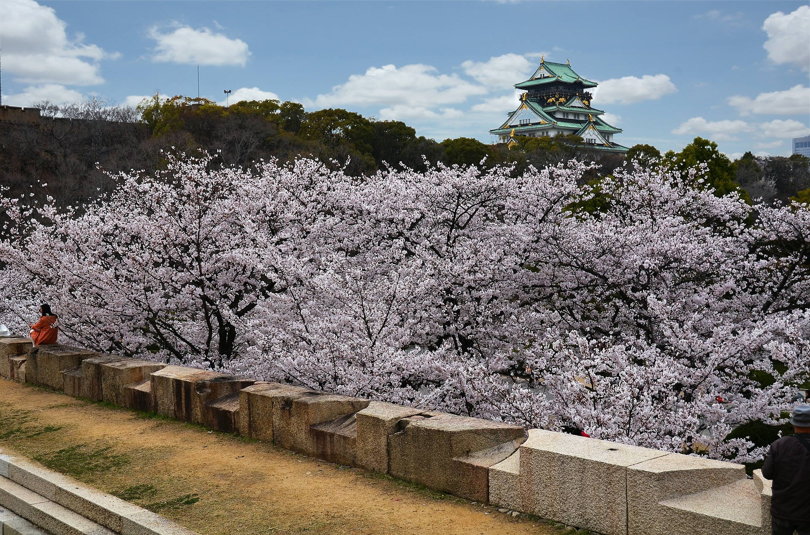

大阪城西の丸庭園
堀の向こうに天守閣を仰ぐ緑豊かな庭園。春には300本の桜が咲き競い、花見客で大賑わい。

営業時間
9：00～17：00 （3月～10月）
9：00～16：30（11～2月）
入園は30分前まで、※桜の開花期は20時まで
休日
毎週月曜日、年末年始
昭和6年（1931）、市民による浄財・約150万円（現在の約750億円に相当）を費やして建て替えられた大阪城天守閣。その天守閣を中心に広がる大阪城公園には大手門、千貫櫓、焔硝蔵など13棟の重要文化財や、梅林、西の丸庭園などがある。豊臣秀吉の正室・北政所の屋敷があった場所とされている西の丸庭園は、昭和40年（1965）、総面積約64,000平方メートルの芝生庭園として開園。周囲を樹木に囲まれ、天守閣や掘の石垣が美しく眺められる。春はソメイヨシノを中心に約300本のサクラが咲き競い、花見の名所としても有名。開花期間は観桜ナイターも開催され、大勢の花見客が訪れる。西の丸庭園の東北隅には昭和44年（1969）、松下幸之助氏から寄贈された茶室「豊松庵」もある。
住所
〒 540-0002 大阪市中央区大阪城2
アクセス
大阪環状線「大阪城公園駅」より徒歩5分､Osaka Metro谷町線「谷町四丁目駅」より徒歩10分
料金
大人200円
＊ 中学生以下、大阪市内在住の65歳以上の方、障がい者の方は無料（※要証明書呈示）
電話番号
06-6941-1717